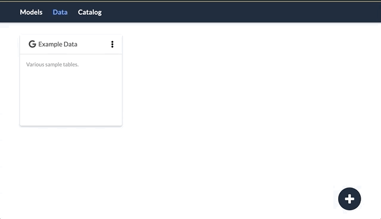

Data in Numbrz
Numbrz Models work by reading and writing data from a number of popular services and applications. Your data is made available to a model by creating connections. A connection is a reference to some external data source that you are authorized to access. Once successfully connected, you choose what data (sheets, tables, files, etc.) to make available to the Numbrz application.
Connect to Data
Click the + icon in the lower right corner to begin the connection process. Select the desired data source from the drop down menu. Depending upon the data source, you will be prompted for additional information to complete the connection. In most cases, this will include authorizing the Numbrz application to access your data on your behalf.
See Also: Supported Data Sources